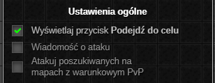
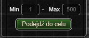

⚠️ UWAGA: Dopóki zestaw nie osiągnie stabilnej wersji (1.0.0) mogą pojawiać się błędy oraz zmiany podstawowych funkcjonalności (Zgłaszanie Błędów)
Kastrat
üîí Ten dodatek jest dostƒôpny wy≈ǃÖcznie w wersji Premium. üîí
Potocznie nazywany Auto X. Dodatek służy gonieniu i automatycznemu atakowaniu graczy, wybieranych na podstawie określonych przez użytkownika kryteriów.
W przeciwieństwie do wszystkich Auto X-ów na rynku, Kastrat działa w oparciu o analizę otoczenia bohatera, co znacząco zmniejsza ilość zużywanych zasobów. Dzięki niestandardowej metodzie ataku, potrafi działać nawet o 33%–50% szybciej (w zależności od interfejsu), skuteczniej wyłapując graczy niż jakiekolwiek inne rozwiązania.
INFO: Uruchomienie wielu Auto X-ów jednocześnie nie zwiększy skuteczności żadnego z nich!

Okno Ustawień
Ustawienia ogólne

- Przełącznik wyświetlania przycisku Podejdź do celu.
- Przełącznik wyświetlania wiadomości podczas wysłania żądania ataku do aktualnego celu.
- Opcjonalne atakowanie graczy poszukiwanych listem gończym na mapach z warunkowym PvP.
Skróty klawiszowe

- włączanie/wyłączanie automatycznego atakowania celu,
- podejście do aktualnego celu.
Okno Aktywnych Ustawień
Ustawienia ogólne

- Zakres poziomowy, z którego wybierany jest aktualny cel.
- Przycisk Podejdź do celu.
Ostatnia aktualizacja: 0.14.4